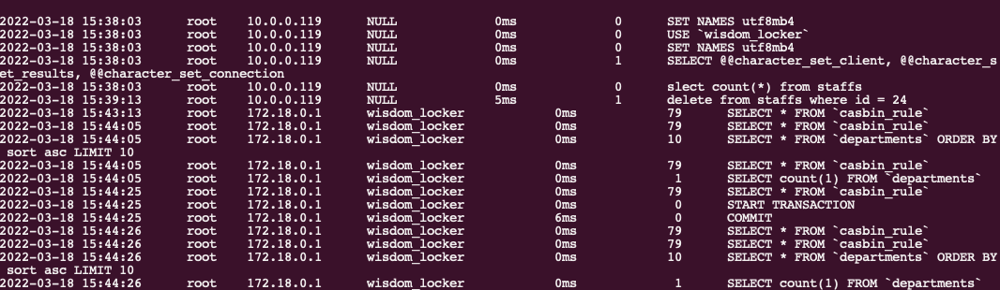

背景
数据库审计是数据库安全中很重要的一个环节。
举一个和我们工作很贴近的例子，比如某一个业务在某个时间点出现了异常，因为异常操作（比如DDL）导致系统出现了严重的问题，这个时候如果要查看这个问题的具体情况，谁登陆了系统，什么时候登陆的，做了什么操作等等。
当然，开审计的功能势必会影响性能，如果不开又会有遗漏。但是为了防患于未然，把问题都扼杀在摇篮之中，通过这种规范和制度来做最后一道防线，数据库审计还是非常有必要的。
审计作用
主要将用户对数据库的各类操作行为记录审计日志，以便日后进行跟踪、查询、分析，以实现对用户操作的监控和审计。
Mysql审计工具
| 名称 | 文档 | 说明 |
|---|---|---|
| mysql-audit | https://github.com/mcafee/mysql-audit | 开源插件,由macfee(迈克菲)公司贡献。有名的安全公司 |
| mysql-sniffer | https://github.com/Qihoo360/mysql-sniffer/blob/master/README_CN.md | 基于流量的数据库审计，通过MySQL 协议进行抓包记录审计日志。不影响数据库服务器性能，不用苦口婆心的劝数据库管理员安装监控软件。由国内安全公司360贡献。 |
| server_audit | https://mariadb.com/kb/en/mariadb-audit-plugin-installation/ | MariaDB 开源插件，由于Mysql和MariaDB属于同源的开源软件，也可以使用，但是要找合适的版本 |
mysql-audit
介绍
官方文档: https://github.com/mcafee/mysql-audit/wiki/Installation
MySQL审计插件是一个来自McAfee的MySQL插件，为MySQL提供审计功能，设计的重点是安全性和审计需求。该插件可以作为独立的审计解决方案使用，也可以配置为向外部监控工具提供数据
安装
Mysql二进制
插件下载地址： https://github.com/mcafee/mysql-audit/releases. 注意选择对应的mysql版本。
查看mysql插件目录
show global variables like 'plugin_dir'; +---------------+------------------------+ | Variable_name | Value | +---------------+------------------------+ | plugin_dir | /usr/lib/mysql/plugin/ | +---------------+------------------------+ 1 row in set (0.00 sec)解压插件拷贝到插件目录下
unzip audit-plugin-mysql-5.7-1.1.10-980-linux-x86_64.zip # 拷贝到插件目录 cp ./audit-plugin-mysql-5.7-1.1.10-980/lib/libaudit_plugin.so /usr/lib/mysql/plugin cp ./audit-plugin-mysql-5.7-1.1.10-980/utils/offset-extract.sh dy_mysql:安装插件
需要说明：安装方式有两种，一种是使用配置文件方式，另一种是命令方式。
官方建议生产环境使用配置文件方式。打开映射的配置文件my.cnf，增加配置:
[mysqld] plugin-load=AUDIT=libaudit_plugin.so重启mysql
验证
show global status like 'AUDIT_version';
docker 方式
- docker 启动:
docker run -d --name mysql-audit -p 13306:3306 -v $(pwd)/datadir:/opt/mysql/data -v $(pwd)/conf/my.cnf:/etc/my.cnf harbor.sxidc.com/yfhub/mysql/audit:latest
- docker-compose.yalm
version: '3'
services:
dy_mysql:
restart: always
image: harbor.sxidc.com/yfhub/mysql/audit:latest
container_name: mysql-audit
volumes:
- ./datadir:/opt/mysql/data
- ./conf/my.cnf:/etc/my.cnf
ports:
- 23306:3306
- 第一次启动修改root密码
# 登录容器
docker exec -it mysql-audit bash
# 查看临时密码
cat /var/log/mysql/error.log | grep "temporary password"
2022-03-23T15:01:55.616902+08:00 1 [Note] A temporary password is generated for root@localhost: pjee-7%9;Ksd
# 登录mysql
mysql -uroot -p
# 修改root密码
alter user user() identified by "duyong";
# 查看插件版本,确保插件安装
show global status like 'AUDIT_version';
- 审计日志目录
cat $(pwd)/datadir/mysql-audit.json
mysql-sniffer
基于流量的数据库审计，因为它不需要更改网络结构，并且也是最关键的是，不影响数据库服务器性能，不用苦口婆心的劝数据库管理员安装监控软件。它可以比较好的发现通过Web漏洞的拖库行为，以及基于数据库通讯协议的数据库管理过程中的违规行为。
ySQL Sniffer。MySQLSniffer是一个基于MySQL协议的抓包工具，实时抓取请求，并格式化输出。输出内容包括访问时间、访问用户、来源IP、访问 Database、命令耗时、返回数据行数、执行语句等。
下载安装
可以直接查看说明文档，自己进行编译安装。我这里偷懒了，直接从docker仓库中找一个别人编译好的环境，然后将可执行文件拷贝出来使用。
docker pull sliceoflife07/mysql-sniffer
docker run -it -d --name sniffer sliceoflife07/mysql-sniffer
sudo docker cp sniffer:/root/mysql-sniffer/proj/bin/mysql-sniffer ./
# 启动
sudo ./mysql-sniffer -i vethf5b5af3 -p 3306
# 如果是docker启动的mysql,最好是找到容器的虚拟网卡。

Postgresql审计工具
参考
http://www.postgres.cn/news/viewone/1/309
二进制安装
依赖
apt-get install -y --no-install-recommends
apt install -y make gcc
apt install -y make
apt install -y postgresql-server-dev-14
apt install -y libkrb5-dev
下载安装
# 下载源码
https://github.com/pgaudit/pgaudit/tree/1.6.2
make install USE_PGXS=1
配置文件中配置
vim /var/lib/postgresql/data/postgresql.conf
shared_preload_libraries=pgaudit
docker方式
- docker方式
docker run --name dy-pgsql -d -e POSTGRES_PASSWORD=duyong harbor.sxidc.com/yfhub/postgres/audit
- docker-compose
version: '3.1'
services:
postgres:
container_name: duyong_postgres
image: harbor.sxidc.com/yfhub/postgres/audit
restart: always
environment:
POSTGRES_USER: root
POSTGRES_PASSWORD: root
POSTGRES_DB: duyong
ports:
- 5432:5432
volumes:
- ./data:/var/lib/postgresql/data
pgadmin4:
container_name: duyong_pgadmin4
image: dpage/pgadmin4
restart: always
environment:
PGADMIN_DEFAULT_EMAIL: admin@fskj.com
PGADMIN_DEFAULT_PASSWORD: 123
ports:
- 18080:80
- 配置
# 进入容器
docker exec -it duyong_postgres bash
# 开启
psql -d duyong;
create extension pgaudit;
set pgaudit.log = 'all, -misc';
- 测试
# 容器内执行
select name,setting from pg_settings where name like 'pgaudit%';
name | setting
----------------------------+------------
pgaudit.log | all, -misc
pgaudit.log_catalog | on
pgaudit.log_client | off
pgaudit.log_level | log
pgaudit.log_parameter | off
pgaudit.log_relation | off
pgaudit.log_rows | off
pgaudit.log_statement | on
pgaudit.log_statement_once | off
pgaudit.role |
(10 rows)
- 格式配置